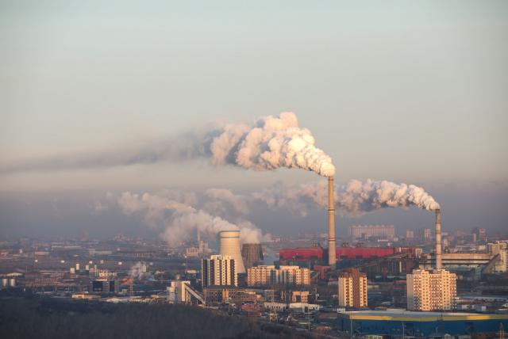
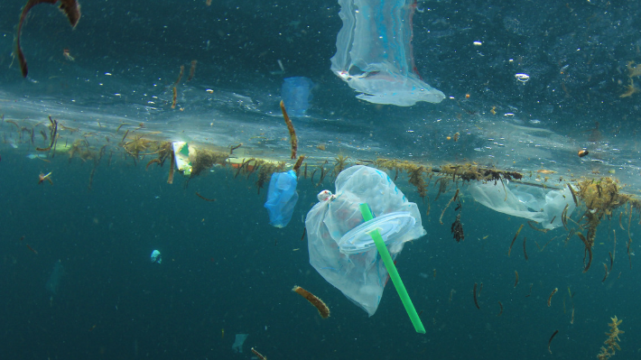
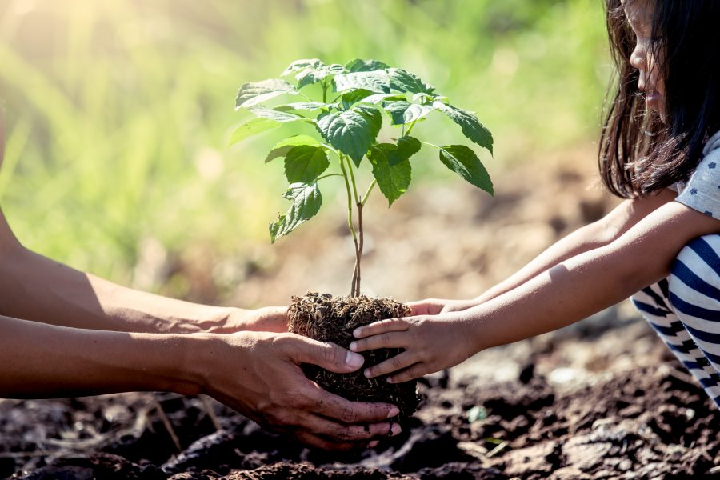
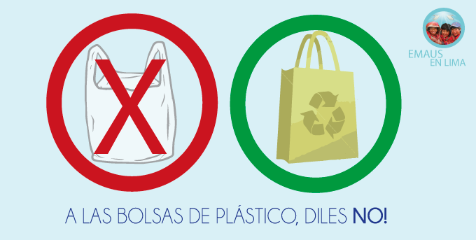

Contaminación terrestre
La contaminación del suelo es una amenaza global especialmente grave
en regiones como Europa, Eurasia, Asia y África del Norte, como revela la
Organización de las Naciones Unidas para la Alimentación y la Agricultura (FAO).
Este organismo internacional asegura también que la degradación intensa o moderada
afecta ya a un tercio del suelo mundial, y su recuperación es tan lenta que se
necesitarían 1.000 años para crear 1 centímetro de capa arable superficial.

Contaminación del aire
Cada año se bate el récord de contaminación del aire. En el año 2019 se alcanzaron casi 40 mil millones de
toneladas de CO2 en la atmósfera, superando el registro del año anterior. Sin medidas eficaces, los efectos
de la contaminación atmosférica serán nefastos para la vida en la Tierra.

Contaminación de los mares
Hasta hace poco, los científicos creían que la contaminación por plásticos del océano
venía principalmente de 20 ríos. Sin embargo, un estudio publicado en mayo de 2021
descubrió que el plástico que inunda los océanos llega a través de más de mil ríos
de todo el mundo.

Plantar árboles
Los árboles son esenciales para el mundo, producen oxígeno,
reducen el dióxido de carbono, absorben gases contaminantes,
regulan la temperatura, entre otros beneficios. Así que ya sabes,
planta un árbol y contribuye al cuidado del medio ambiente.

Separar la basura
Es importante separar los residuos en distintos botes: orgánica, vidrio,
cartón, plásticos y desechos tóxicos. Por tu salud, cuida tu entorno.

Ahorrar agua
El agua es un recurso imprescindible y escaso que debemos usar con responsabilidad.
Cerrar el grifo mientras te lavas los dientes, bañarte en 5 minutos, juntar el agua
de la regadera mientras te bañas, son pequeñas acciones que ayudan a ahorrarla.

No usar tanto pástico
Ahora en casa o en el trabajo las bolsas reutilizables abundan, así que llevar una al
supermercado no es una difícil tarea. Algo que sin duda nos puede hacer recordar que
debemos evitar el uso de bolsas de plástico, ya que la producción de estas, requiere la
utilización de aproximadamente 12 millones de barriles de petróleo, su degradación tarda
aproximadamente 20 años.